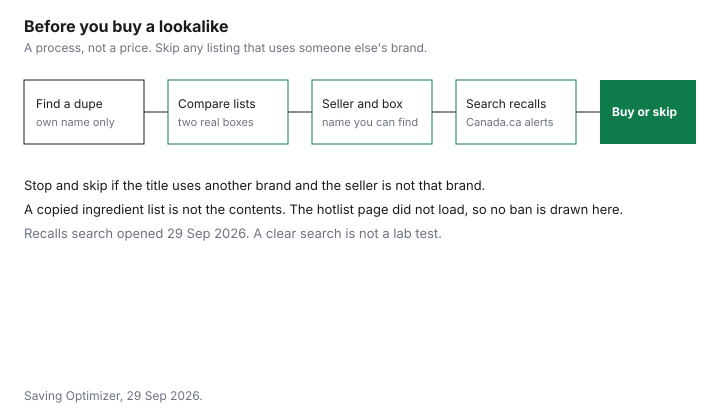

Personal Care · Canada
Beauty Dupes in Canada: Getting the Look for Less Without Buying Counterfeits
A cheaper look is a saving only when the bottle is what it says it is, and only when you will use it. This page separates three ideas: a product sold under its own name, a counterfeit sold as someone else’s brand, and a genuine product sold outside the usual Canadian channel. No dupe brand is named. The recalls search did. This is not legal advice and not a product ranking.
Key takeaways
- A dupe, here, is a different product under its own name. A counterfeit is passed off as a brand it is not. A grey-market item can be genuine and still sit outside the usual Canadian channel. This page states no criminal rule.
- Compare ingredient lists on the two real packages. A copied box is not evidence of what is inside.
- The recalls and safety alerts search was checked 29 Sep 2026 and showed that date as its modified date.
- The categories where a like-for-like comparison can be worth doing are fragrance, primers, and lip products, measured as cost per millilitre of a product under its own name.
- A store brand sold as itself is the pharmacy toiletries guide, not a counterfeit and not a luxury dupe.
Dupe vs counterfeit vs grey market
Use the words narrowly. A dupe is a product offered under its own brand that shoppers compare with a more expensive look.
Selling it is not, on this page, described as a crime. Copying a trademark, a box, or a brand name so that the buyer thinks they are getting the other brand is a counterfeit. This guide does not cite the Trade-marks Act or a prosecution guideline, so it does not recite penalties. It does say you should not buy the copied box. A grey-market product is a genuine item sold outside the brand’s usual Canadian distribution. Warranty, returns, and formulation can differ from the Canadian shelf. That is a retail fact to check with the seller, not a ruling that the purchase is unlawful.
The household version of “sold under its own name” is the store-brand household guide. A retailer’s own cotton or cleaner is not a dupe of a luxury cosmetic, and it is not a counterfeit. Do not mix those aisles. If the listing uses another brand’s name in the title and the seller is not that brand, stop. That is the counterfeit pattern, whatever the price.
How do you compare ingredient lists?
Put two genuine packages side by side. Read each ingredient list in the order that package prints it.
A shorter list is not automatically safer, and a matching first ingredient is not the same formula. Note fragrance, dyes, and any active the label highlights. If either package prints a DIN or an NPN, look it up the way the toiletries guide describes, in the Drug Product Database or the Licensed Natural Health Products Database. A cosmetic often has neither number. Do not invent one.
You cannot run that comparison on a counterfeit, because the list on a copied box is not evidence of the contents. This page names no restricted substance and no concentration limit. Read the hotlist yourself before you treat an ingredient as allowed. A social-media photo of a texture is not an ingredient list.
Marketplace red flags: price, seller, packaging
Price is a flag when it is detached from the brand’s own Canadian page, not when it is merely less than a department-store shelf. This guide uses no paired prices, so it sets no percent-off rule. The seller is a flag when the name is not the brand and not a retailer you can identify, when the listing has no business name, or when the only contact is a messaging app. Packaging is a flag when the box in the photo does not match the brand’s current Canadian box, when languages or shade names you can check on the brand’s site are missing, or when the cap, the lot code, or the seal looks improvised.
Price history on Amazon.ca is the price-tracking guide. A low tracked price is not proof the seller is the brand. A subscription checkout that hides the renewal is the cancel-path guide. Neither guide authenticates a cream.
Health Canada cosmetic rules and recalls
No notification deadline and no prohibited ingredient are stated. The recalls and safety alerts search at the Government of Canada site did load.
The page showed a date modified of 2026-09-29. Search the product name and the brand. A clear search means this database did not show you an alert. It does not mean the product was tested for you. If an alert names a lot or a seller, follow that alert rather than a forum summary.
Report a serious reaction through the same site’s incident path rather than through a comment thread. This page is not a clinic. Classification for customs, if you are importing, is the US beauty orders guide, and it tells you to check with CBSA.
Where dupes really save money: fragrance, primers, lip products
The comparison that can be worth the time is narrow. Fragrance, a primer, and a lip product are small, repeat purchases where cost per millilitre of a product under its own name can be set beside the product you are tempted to copy.
Write the size and the price you actually pay. Divide. Then ask whether you will finish it. A primer you use once is not cheaper per day than a more expensive primer you use daily. No category is given a dollar saving, and no brand is recommended.
Foundation, sunscreen, and anything you buy because of a drug or natural-health active are the wrong place for a “close enough” swap. Match the active or do not swap. A store-brand lipstick sold as the store’s own brand can be a price comparison. A listing that borrows a luxury name is not that comparison. Skip it.
Returns and authenticity guarantees
A return of a counterfeit is whatever that marketplace, that seller, and your card say. This guide does not cite an authenticity-guarantee page, so it states no window and no promise of a refund.
Keep the listing, the seller’s name, the price, and the payment record. The return-policy guide is the ordinary change-of-mind map for Canadian stores. A store that never promised the luxury brand does not owe you the luxury brand. A payment dispute is a question for the card issuer, and it is not described here.
An authenticity seal, a registration card, or a QR code is useful only if you can check it on a site the brand controls. A code that resolves to a seller’s own page proves nothing. If you cannot find the seller’s legal name, do not pay, and do not rely on getting the money back.
| What it is | Legality, in general | Safety | How you spot it | |
|---|---|---|---|---|
| Dupe | A different product under its own name, compared with another look | This page does not call that sale a crime. Passing off is a different row. | Read the real ingredient list. | The brand on the box is the brand that made it |
| Counterfeit | Sold as a brand it is not | Do not buy it. | The ingredient list on a copied box is not evidence of the contents. No specific contaminant is stated. | Someone else’s name, logo, or box, and a seller who is not that brand |
| Grey market | A genuine product outside the usual Canadian channel | This page states no criminal rule. Warranty and returns can differ. | The formula can differ from the Canadian shelf. Check the package you received. | Real brand, unexpected retailer, no Canadian warranty language |
| Check | Stop if |
|---|---|
| Seller | You cannot find a business name, or the name is not the brand and not a store you can identify |
| Title | The listing uses another brand’s name and the seller is not that brand |
| Price | You cannot reconcile it with the brand’s own Canadian page. No cutoff percent is stated here. |
| Package | The photo does not match the brand’s current box, shade name, or seal |
| Recalls | You have not searched the Government of Canada recalls site for that name |
| Aftercare | The only promise of authenticity is a message from the seller |

Sources & date stamps
- Government of Canada, recalls and safety alerts search, checked 29 Sep 2026. The page showed a date modified of 2026-09-29. No cosmetic recall was singled out as a fact for this guide.
- No prohibited ingredient, no contaminant, and no notification deadline is stated.
- No dupe brand is named.
Frequently asked questions
What's the difference between a dupe and a counterfeit?
A dupe, on this page, is a different product sold under its own name that shoppers compare with a more expensive look. A counterfeit is sold as a brand it is not. A grey-market item can be a genuine product sold outside the usual Canadian channel, and this page does not state a criminal rule for buying one. None of those labels is a ranking, and no brand is named.
Are counterfeit cosmetics dangerous?
This page does not name a contaminant. A box that copies a brand is not evidence of what is inside, so the ingredient list on that box is not a fact you can use. Search the recalls and safety alerts site before you buy, and skip the product if the seller will not show a real company name.
How do I check if a cosmetic has been recalled in Canada?
Open the Government of Canada recalls and safety alerts search and type the product name and the brand. The search page checked 29 Sep 2026 showed a date modified of that same day. A clear search is not a promise the product was tested. If you cannot find the seller's legal name, do not treat a social-media photo as a recall check.
Where do dupes save the most money?
The comparison that can pay is cost per millilitre, under the product's own name, for a fragrance, a primer, or a lip product you will finish. This guide uses no shelf prices, so it prints no dollar gap and names no brand. A store brand sold as itself is a different question, covered on the pharmacy toiletries guide. A copied luxury logo is not a saving.
Can I return a counterfeit I bought online?
Only on the terms of that seller, that marketplace, and your payment method. This guide does not cite an authenticity-guarantee page, so it states no day count and no refund promise. Keep the listing, the seller name, and the receipt. A return is not legal advice, and a store's ordinary change-of-mind rule may not cover a counterfeit.
Researched and drafted with AI assistance and fact-checked against official Canadian sources. How we create content.
Disclosure: Amazon.ca storefronts are an offer type. Saving Optimizer may earn a commission if a partner link is added later. No partnership is claimed with Amazon or any marketplace. A storefront is not an authenticity guarantee. Education only.